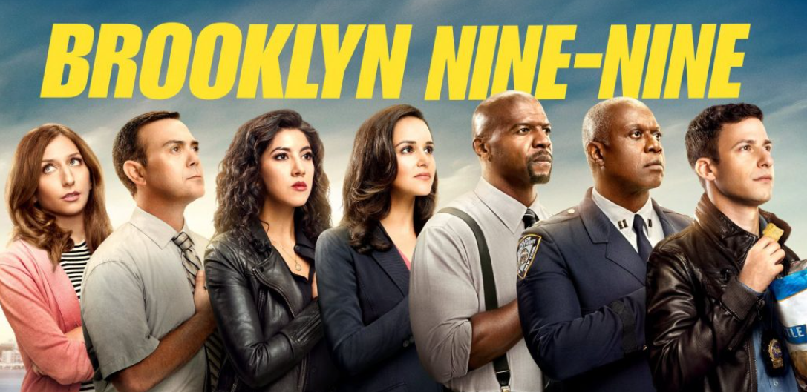

A série gira em torno de Jake Peralta (Andy Samberg), um imaturo, mas talentoso, detetive da polícia de Nova York na fictícia 99.ª Delegacia do Brooklyn, que muitas vezes entra em conflito com seu novo comandante, o sério e severo capitão Raymond Holt (Andre Braugher).
Situado na 99.ª delegacia fictícia do Departamento de Polícia de Nova York, no Brooklyn, Brooklyn Nine-Nine segue uma equipe de detetives liderados pelo capitão Raymond Holt (Andre Braugher), recém-nomeado e muito sério. Os detetives incluem Jake Peralta (Andy Samberg), que tem uma alta taxa de prisões bem-sucedidas e casos resolvidos, apesar de sua atitude relaxada, despreocupada e (às vezes) infantil. Ele finalmente se apaixona por sua parceira severa, nerd, amável, mas adorável, Amy Santiago (Melissa Fumero). O esforçado, mas tímido Charles Boyle (Joe Lo Truglio) faz parceria com a estóica, agressiva e severa Rosa Diaz (Stephanie Beatriz). Os dois detetives mais velhos, Michael Hitchcock (Dirk Blocker) e Norm Scully (Joel McKinnon Miller) muitas vezes parecem incompetentes, estúpidos e preguiçosos, mas resolveram mais casos ao longo dos anos simplesmente porque estão trabalhando há mais tempo.
Os detetives se reportam ao sargento Terry Jeffords (Terry Crews), um gigante gentil e devotado homem de família que inicialmente tem uma fobia de voltar ao trabalho policial de campo ativo por medo de ser morto no cumprimento do dever e deixar suas filhas sem pai. A delegacia também inclui a administradora civil sarcástica e dominadora Gina Linetti (Chelsea Peretti), que não gosta de seu trabalho, prioriza suas mídias sociais e acredita que dançar é seu objetivo de vida.